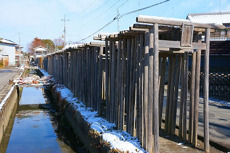
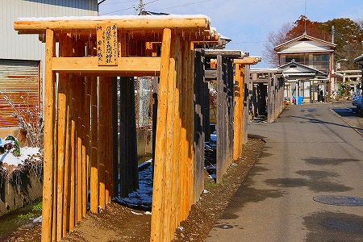

日限富士浅間神社/栃木県
真冬の北関東である。
しかも近年稀に見る大雪の翌日。
休みが取れたので、向ってはみたものの車窓はこんな感じ。
美しい、といえば美しいのだが、寒いの苦手な小生としてはあまりウキウキする光景では、決してない。
お目当ては栃木市にある浅間神社。
ここ数年、浅間神社がマイブームで、関東近県の浅間神社をよく訪れているのだ。
今回も浅間神社があるという漠然とした理由だけで栃木市まで足を運んだ訳なのだが。
駅を降りて大後悔。
めちゃ寒いじゃないですか！風が…風が冷たすぎて何か痛いっ！
あまりの寒さにお腹がキュルキュル悲鳴を上げてます（過敏性大腸何とかという症状なんだそうです）。
街は時折屋根から落ちる雪の塊が炸裂してダイアモンドダスト状態（そんな洒落たものではないですが）。
壊れかけた雨樋からは隙間からぴゅーっと漏れた水がそのまま凍っていて、妙にパンキッシュな感じになっていたよ。
あー、寒いし足元ぐちゃぐちゃだし、お腹痛いし、駅前にあった銭湯に入って一杯やって帰っちゃおうかなー。
と思ったが、頑張りましたよ。俺。
てなわけで日限富士浅間神社の参道に到着した（風呂と酒の誘惑を断ち切る以外はそんなに大変ではなかったけどな）。
参道、とはいえ弩ローカルな住宅街の中にある普通の道だ。
そんな中、今にも倒れそうな鳥居がひょろひょろ〜っと建っている。
ここの神社の鳥居は何故か色が塗られていない。

鳥居といえば朱の鳥居を想像してしまいがちだが、こういうシンプルな鳥居っていうのもあるんだねえ。
しかも、妙に柱が細い。
いわゆる昔でいうところの足場丸太と呼ばれていた直径数センチの丸太だな。
一番上に横たわる笠木も同じく足場丸太。勿論丸太だけに反りもへったくれもない。
笠木の下の貫はいわゆる貫板。これまた安価な建築材料だ。
つまりかなり簡単な材料でタテタテヨコヨコに組まれためちゃシンプルな鳥居なのである。
ところがそんなシンプルな鳥居でも数が揃うとご覧の通り。
どうすか？
結構迫力あるでしょ？
しかも色もなく、形もあまり鳥居っぽくないので木造のトンネルのように見えてきませんか？
中はこんな感じ。
坑道の中を歩いているような気分になってくる。
これが朱塗りで微妙な反りや傾斜がある普通の鳥居だったらそんな気分にはならないのだが。
ほら、いかんせんタテタテヨコヨコですから。
にしても寒い！つららが鼻水のように垂れているよ。
しばし進むと新しい鳥居もチラホラ。

勿論こちらも足場丸太のタテタテヨコヨコなのだが、新しいだけにチョット立派に見える。
まあ、1年もすれば他の鳥居と同じような色になるんだろうけどね。
鳥居は所々抜けている。
恐らく風雪で朽ちた鳥居が撤去されたのだろう。
それにしてもこれだけの数の鳥居が奉納されているということはこの神社は相当ご利益があるのか、信仰圏が広いのか、歴史が古いのか、いずれかなのだろう。あるいはその全部なのか。
単なるローカル浅間神社を見に来たつもりだったが、案外凄い神社なのかもしれないぞ。
…と勝手にヘンな期待を膨らませつつ、鳥居を潜っていくと一軒の民家にぶち当たる。
あれ？これが神社なの？
それにしても滅茶普通の民家なんですけど。
…と思ったら民家を避けるように鳥居が右側にずれていた。
何故民家に向かって鳥居が並んでいたのか、その経緯は判らない。
鳥居を潜った先に民家がある、というのはずっこけ方としては中々のものだったよ…。
というわけでやっと日限富士浅間神社に到着した。
日当たりの悪い境内は所々雪が凍ってアイスバーンになっていた。
そして拝殿、本殿を囲むように鳥居の列は続いている。
何か凄いな、この鳥居へのこだわりよう。
滑らないように慎重に歩きますよ、っと。
拝殿脇には鈴緒が奉納されていた。
そして鉄板の鳥居も。
こちらの方がよっぽど鳥居っぽかったよ。
そして旅の安全を祈願する絵馬。
最近はパワースポットとしても人気なのだとか。
ああ、良い絵馬を拝見しました。
心、洗われましたよ。
ちなみに日限（ひぎり）というのは特定の日に参拝する事で、その日に参拝すれば願い事が叶うのだという。
日限といえば地蔵尊、というのが通り相場だと思っていたが、ここのように日限の神社というのもあるんですね。
いや、勉強不足でした。
ついでに言うと、先ほどのずらりと並んだ鳥居。
願い事が叶うとお礼に鳥居を奉納するのだが、それも稲荷神社特有のものとばかり思い込んでいた。
これまた勉強不足でした。すまんのう。
とはいえ、どうもこの神社、異例尽くしのような気がしてならない。
日限信仰や鳥居奉納の習俗にしても、そもそも浅間神社の信仰とかけ離れているし。
それ以上にこの神社、浅間神社っぽくないんだよねえ。
言うまでもなく浅間神社というのは富士山信仰の神社だ。
そして首都圏辺りに数多くある浅間神社といえば小高い山の上にあるか、人工の築山にあるか、あるいは富士山のミニチュアである富士塚を擁しているのが通り相場なのだ。
ところがこの神社はそのいずれでもないのだ。
むしろ「元々はお稲荷さんなんですけど」、と言われた方がよほどしっくり来る感じなんですけど。
いや。
こういうことは軽々に言うことは慎むべきことなのは承知しているが、冨士信仰の「ふ」の字も見当たらないこの神社の様子を見ていると何か不思議な感じがしてくるのですよ。
（いや、見落としていたら平に御容赦願いたいのだが）
ここは本当に浅間様なのか、あるいは稲荷、または他の信仰が浅間信仰にトランスレートされたのか、それとも冨士信仰が行われてきた中に稲荷信仰や地蔵信仰がごちゃまぜになってきたのか。
考えるだけでワクワクしてきたので、そのうち調べてみよう。
真相を御存じの方は是非とも御教示願います！
帰り道、寒さに震えつつ、また鳥居の行列の脇を通る。
あ、でもよく見ると、雪が笠木の上に乗っていた所為で笠木がダブルになってるっぽくてチョットだけゴージャスでしたよ！
2014.02.
珍寺大道場 HOME